Simple Domain Modeling Language
Table of Contents
- 1. Introduction
- 2. Surface Syntax
- 3. RDF Semantic Model
- 4. Walk-Through Example
- 5. Transformations
- 6. Implementation and Tools
- 7. Appendix: Complete Surface Syntax Grammar
- 8. Appendix: Standard Library
- 9. Appendix: Surface Syntax to RDF
- 10. Appendix: UML Profile for SDML
- 11. Appendix: License
- 12. Appendix: Tables of Other Content
1. Introduction
The Simple Domain Modeling Language1 is a small data-oriented language for constructing, documenting, and reasoning about a conceptual domain model. For a background on domain modeling see section 1.1. At it's core SDML comprises 1. an Semantic Model whose structure and semantics are described in RDF2 by an OWL3 ontology (see section 3 for more details), and 2. a surface syntax for editing and sharing model artifacts (see section 2 for more details). Figure 1 shows the relationship between these high-level components.
This document covers both the semantic model and surface syntax representation andas well as the correspondence between them. However, the primary focus of the documentation is the surface syntax as most users will be interacting with it alone.
Figure 1: Model Overview
The language uses some ideas from UML4 which is often used in the construction of such models today. However, the goal is to keep the language as small as possible, taking away some options where they don't make sense or where their use may distract from the major purpose of the model. The model also takes some of the language from Domain-Driven Design5, namely the separation of entities (an object defined not by its attributes, but its identity) from value objects (an immutable object that contains attributes but has no conceptual identity), simply termed structures in SDML. This model does not include the following as first-class concepts: aggregates, repositories, factories, or services.
1.1. Domain Modeling
There is often confusion around the use of the term Domain Model especially in regard to terms such as Data Model, Class Model, Schema and more. This short appendix is an attempt to clarify the terminology and how the relevant modeling efforts are undertaken. This is not intended as an exhaustive review of modelling approaches, standards, or technologies and neither does it make any judgement as to the usefulness of any approach or technology.
1.1.1. Model Terminology
A model is an informative representation of an object, person or system. The term originally denoted the plans of a building in late 16th-century English, and derived via French and Italian ultimately from Latin modulus, a measure. As is common in software development the term model is overloaded and it's use can lead to confusion as people have different expectations and assumptions regarding what kind of model is being discussed. To this end we introduce some terminology here that, if simply used as model qualifiers, helps to disambiguate the purpose of any particular model.
For now we will use the following classification to partition the major purpose of different model instances.
- Data: A data model in software engineering is a representation of concepts and the relationships, constraints, rules, and operations to specify data semantics for a chosen domain of discourse. Typically it specifies relations between kinds of things, but may also include relations with individual things. It can provide sharable, stable, and organized structure of information requirements or knowledge for the domain context.
- Behavior: Behavioral languages are designed to describe the observable behavior of complex systems consisting of components that execute concurrently. These languages focus on the description of key concepts such as: concurrency, nondeterminism, synchronization, and communication.
- Process: [Business] process modeling (BPM) in business process management and systems engineering is the activity of representing processes of an enterprise, so that the current business processes may be analyzed, improved, and automated.
A common framework for defining the level of abstraction inherent to a model are the three perspectives introduced by ANSI in 1975 (introduced in section 1.2.
- Conceptual: In the field of computer science a conceptual model aims to express the meaning of terms and concepts used by domain experts to discuss the problem, and to find the correct relationships between different concepts. The conceptual model attempts to clarify the meaning of various, usually ambiguous terms, and ensure that confusion caused by different interpretations of the terms and concepts cannot occur.
- Logical: A logical data model or logical schema is a data model of a specific problem domain expressed independently of a particular database management product or storage technology (physical data model) but in terms of data structures such as relational tables and columns, object-oriented classes, or XML tags. This is as opposed to a conceptual data model, which describes the semantics of an organization without reference to technology.
- Physical: A physical data model (or database design) is a representation of a data design as implemented, or intended to be implemented, in a database management system. In the lifecycle of a project it typically derives from a logical data model, though it may be reverse-engineered from a given database implementation.
With these two classifications we can construct a simple grammar for the qualification of the term model:
Perspective = "conceptual" | "logical" | "physical" Scope = "data" | "behavior" | "process" ModelReference = Perspective, Scope "model"
1.1.2. Modeling Language/Notation
There have been a number of modeling techniques, notations, and languages over the years. The following table describes those in common use today. It is worth noting that after OMG standardization there are common meta-model underpinnings for UML and BPMN.
| Data | Behavior | Process | |
| Conceptual | UML1, Concept Map, Semantic Net | UML2, Flowchart | UML3, BPMN, EPC4 |
| Logical | UML1, EXPRESS, IDEF1X, IE5 | UML2 | BPMN |
| Physical | UML1, … | UML6, Statecharts, Petri net |
- Class and Component diagrams.
- Sequence, State, and Activity diagrams.
- Use Case and Activity diagrams.
- Event-driven Process Chains.
- Information Engineering (IE) introduced the commonly used crows-foot notation.
- Action Semantics and action languages.
UML has a built-in extension mechanism with stereotypes and profiles and data modeling concerns are often introduced with specific extensions such as stereotypes for different key types.
1.1.3. Modeling Themes
(TODO: Complete this section)
Commonality
Variability
- Inheritence
- …
- Interface and Implementation
- …
- (no term)
1.1.4. Domain-Driven Design
Domain-driven design (DDD) is a software design approach focusing on modeling software to match a domain according to input from that domain's experts. Under domain-driven design, the structure and language of software code (class names, class methods, class variables) should match the business domain.
Within this approach the domain model is usually a conceptual or logical data model that describes the key entities that comprise the domain. The representation of this model can be any of the languages described above although UML is the common. The discipline of domain modeling is unique in it's focus on deriving data/information models directly from the business and stresses the involvement of domain experts from the business in the development of models. Additionally the literature describes specific kinds of model entities and their unique semantics, Entities, Value Objects, Events, and Aggregates, etc. which help focus conversations on key modeling concepts such as identity, lifecycle, and ownership.
Thus, a Domain Model is a conceptual (UML or Ontology) or logical (UML) data model developed according to a specific methodology (DDD) and employing a specific meta-language (UML Profile).
Some of the defined kinds, Repository, Factory, and Service are lower-level concerns and the lack of a clear separation between different levels of abstraction is one criticism of the method. Additionally terms such as Entity as defined by DDD are not entirely compatible with the use in pre-existing methods such as E/R modeling.
However, the method's focus on the business and it's vocabulary as the basis for models is valuable in an effort such as the Universal API where the model will represent our business model in different presentations.
1.2. Domain Modeling's Role in Development
The software development process may be described as the management of abstraction; requirements are an abstraction representing actual needs of some group of individuals, a whiteboard drawing may be an (informal) abstraction of a system design, a UML model may be a formal abstraction of system or component dependencies, and so forth. We can stratify these levels of abstraction as shown in figure 2 although almost any such stratification will crash headlong into any number of detractors.
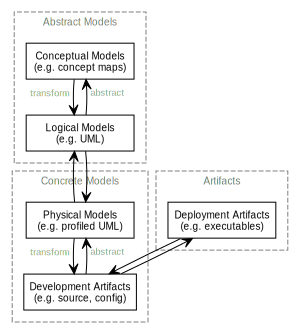
Figure 2: Artifact Layers in Software Development
While this figure groups these levels into three groups, abstract models, concrete models, and artifacts this is again somewhat arbitrary given that even the executable deployment artifacts are an abstraction concerning how the operating system and CPU will layout and execute our application.
Figure 3 demonstrates the key element of a Model-Driven Development6 style, namely the transformation between models and between models and other development artifacts. In this case we use the terms introduced above where we transform from a more abstract model to a more concrete model or directly to other artifacts. The transformation also has to have a set of rules that define the selection and projection of elements from the source model.
Figure 3: Model Transformations
Example:
In the following example we show a tree of transformations from a domain model through three intermediate models to various artifacts such as SQL, code, and Thrift7.
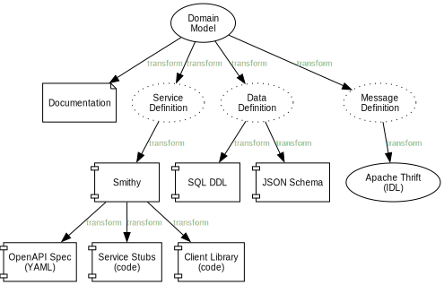
Figure 4: Example Model Transformations
1.3. Goals
The purpose of SDML is to be the source of truth concerning the enterprise's domain, and the root of the tree shown in figure 4. It needs to provide an abstraction that is expressive enough to model the structure of entities that define the domain, while providing enough detail to be useful in transforming to the next level of more concrete models and artifacts.
SDML has two key tenets that help in this goal:
- Provide the ability to capture correct, but incomplete models to allow fast capture of key information first.
- Provide an extension mechanism that goes beyond marker values and allows semantic extension when necessary.
Additionally, by focusing first on a text-based syntax we provide a resource representation that fits well into most software processes, it can be version controlled, it's diff-friendly, you can use code-reviews and pull-requests to build governance processes. While this document does not preclude alternative representations, including visual ones, the surface syntax is the canonical authoring form.
(TODO: Add data dictionary discussion)
(TODO: Add vocabulary discussion)
1.4. Non-Goals
(TODO: Complete this list)
- Versioning
- Object Modeling
- Behavior Modeling
- Standardization
2. Surface Syntax
This section describes the SDML surface syntax, a syntax intended to look and feel like a programming language but with extensibility provided by it's underlying RDF and OWL foundation. The goal of the following syntax is to allow for rapid capture of domain information but allowing elaboration of details over time. To this end we have made language features optional wherever possible such that the minimum information neccessary is required to build a valid model. This document will use the terms valid to denote a model that has no syntactic errors and complete to denote a valid model that has no short-form, or incomplete, model elements.
For the complete grammar, and notes on BNF notation, see Appendix 7.
2.1. Whitespace and Comments
This grammar chooses to use the JavaScript regular expression character class \s which includes the following values,
including all Unicode whitespace.
Whitespace = "\f" | "\n" | "\r" | "\t" | "\v" | "\u{0020}" | "\u{00a0}" | "\u{1680}" | "\u{2000}".."\u{200a}" | "\u{2028}" | "\u{2029}" | "\u{202f}" | "\u{205f}" | "\u{3000}" | "\u{feff}"
Comments follow Lisp-like forms, starting with a semi-colon character and continuing to the end of line.
LineComment = ";", ( -( "\r" | "\n" ) )*
; <- comments start here, end here ->
Lisp conventions for single, double, and triple comment characters are useful but in no way enforced.
;;; File-level comment ;; Comment at-point ; Comments in right margin
2.2. Identifiers
An identifier is a string of characters corresponding to the Unicode General Category8 Lu (an uppercase letter),
Ll (a lowercase letter), Nd (decimal digit), or the Unicode Low Line (underscore, "_", U+005F) character. Specifically
an identifer must start with and must begin and end with a letter such that the low line character may only appear
within the identifier. The following is the BNF description of the identifier syntax.
Identifier = IdentifierInitial, IdentifierChar*, ( "_", IdentifierChar+ )* IdentifierInitial = UC_LETTER_UPPER | UC_LETTER_LOWER IdentifierChar = IdentifierInitial | UC_NUMBER_DECIMAL
Naming Conventions:
- Module Name
- lower Camel Case; i.e.
xsd,skos,bank, orcustomer. In general this should be a broad noun. - Structure/Entity/Event/Enum Name
- Upper Camel Case; i.e.
Customer,Account,Address, orName. In general these are nouns related to, and often narrower than, the module name. - Data Type Name
- Upper Camel Case; i.e.
ShortString,AccountNumber, orSocialSecurityNumber. In general these are broad nouns, with either a property noun suffix as inAccountNumberor a qualifier noun prefix as inShortString. Do not create capitalized acronym (SSN) or abbreviation (ID) forms unless these are universally understood within the domain. - Type Member Name
- lower Camel Case; i.e.
street,accountName, orcurrentValue. As in data type definitions these are broad nouns, with either a property noun suffix as inaccountNumberor a qualifier noun prefix as inshortName. These are commonly simply the lower Camel Case version of the corresponding type name. - Enum and Union Variant Name
- Upper Camel Case is the preferred, although SHOUTY CASE is acceptable.
2.2.1. Qualified Identifier
A qualified identifier comprises a module identifier followed by the Colon (":", U+003A) character and the identifier of a
member within that module.
QualifiedIdentifier = Identifier, ":", Identifier
A type reference may be to a locally defined type by an identifier, or an imported type by a qualified identifier.
IdentifierReference = QualifiedIdentifier | Identifier
2.3. Module Declaration and Imports
A module is the container for a set of type definitions and typically models a Domain or Sub-domain. A single resource (in the web sense of some thing identified by an IRI) may contain only a single module. Therefore, the smallest valid resource is one with an empty model.
Module = "module", Identifier, ModuleBase?, ModuleBody ModuleBase = "base", IriReference ModuleBody = "is", ImportStatement*, Annotation*, ( TypeDef | PropertyDef )*, "end"
An empty module (listing 3), specifically a module with an empty body which is the content
between the keywords is and end.
module example is end
2.3.1. The base Specifier
The keyword base provides the base IRI for the module and corresponding RDF schema or OWL ontology. This corresponds to
the use of the xml:base attribute in RDF/XML and the @base directive in Turtle and SPARQL9. This IRI is used
as a prefix for defined type names so that each type has a unique IRI. The example in listing
4 demonstrates the assigned IRI identifier for the structure type named Thing.
module example base <https://example.org/rdf/example#> is structure Thing ;; IRI: https://example.org/rdf/example#Thing end
2.3.2. Importing Modules and Members
To import types from other modules you add one or more import statements to the module body. Each statement may reference one or more module names or the qualified name of a type within a module.
ImportStatement = "import", ( Import | "[", Import+, "]" ) Import = MemberImport | ModuleImport MemberImport = QualifiedIdentifier ModuleImport = Identifer
The module in listing 5 contains a single import statement referencing the module named xsd
making it's members visible in the qualified form xsd:*.
module example is import xsd end
The module in listing 6 contains a single import statement referencing the member named integer from
the module xsd making it visible.
module example is import xsd:integer end
To reduce the number of import statements a list of identifiers, both module and member, may be referenced as a list.
Listing 7 makes the members author and title from the module dc visible. Lists in SDML start
with the Left Square Bracket ("[", U+005B) character and end with the Right Square Bracket ("]", U+005D) character with
no separator character between members of the list.
module example is import [ dc:title dc:author ] end
2.4. Data Types and Values
A data value is either a simple value, a value constructor expression, an identifier reference or a list of values.
Value =
SimpleValue
| ValueConstructor
| IdentifierReference
| ListOfValues
The inclusion of an identifier reference as a value allows for annotations whose value is another model element.
2.4.1. Simple Values
The core data types supported by SDML are boolean, integer, decimal, double, string, (Language-Tagged String), and iri
for IRI References. Values corresponding to these types are termed simple values.
SimpleValue =
String
| Double
| Decimal
| Integer
| Boolean
| IriReference
A Boolean value in SDML is either the keyword true or false.
Boolean = "true" | "false"
An Integer value in SDML is a string of ASCII decimal digits, without leading zeros; zero, 0, is a valid value however
00 and 01 are not. The Integer type corresponds to a 64-bit signed integer number.
Integer = NumericSign?, Unsigned Unsigned = Zero | NonZero, ( ASCII_DIGIT )* NumericSign = "+" | "-" Zero = "0" NonZero = "1".."9"
A Decimal value in SDML is an integer-like value, followed by the Full Stop (".", U+002E) character and another
integer-like value. The Decimal type corresponds to a 128-bit representation of a fixed-precision decimal number.
Decimal = Integer, ".", ( ASCII_DIGIT )+
A Double value in SDML is a decimal-like value followed by a lower or upper case letter E (Latin Small Letter E, "e",
U+0065 or Latin Capital Letter E, "E", U+0045), a sign character (Hyphen Minus, "-", U+002D or Plus Sign, "+", U+002B)
and an integer-like value. The Double type is a 64-bit floating point number (specifically, the "binary64" type defined
in IEEE 754-2008).
Double = Decimal, ExponentChar, NumericSign?, Integer ExponentChar = "e" | "E"
A String value in SDML is a sequence of Unicode characters starting and ending with a Quotation Mark ('"', U+0022) character. While
standard escape sequences allow for embedding non-printing characters. The form \u{XXXX}, where X is a single hex digit,
allows for the inclusion of any Unicode characters by their code point. Note that this form requires a minimum of 2 and
a maximum of 6 such digits. In addition,the following single-character escape characters are supported.
String = QuotedString, LanguageTag? QuotedString = "\"", ( -NotAllowed | CharacterEscape | UnicodeEscape )*, "\"" NotAllowed = "\"" | "\\" | "\u{00}".."\u{08}" | "\u{0B}".."\u{1F}" | "\u{7F}" CharacterEscape = "\\", ( "\"" | "\\" | "\/" | "a" | "b" "e" | "f" | "n" | "r" | "t" | "v" ) UnicodeEscape = "\\u{", HexPair, ( HexPair ( HexPair )? )?, "}" HexPair = ASCII_HEX_DIGIT, ASCII_HEX_DIGIT LanguageTag = "@", ASCII_LETTER_LOWER, ASCII_LETTER_LOWER, ASCII_LETTER_LOWER? ( "-", ASCII_LETTER_UPPER, ASCII_LETTER_UPPER, ASCII_LETTER_UPPER )? ( "-", ASCII_LETTER_UPPER, ASCII_LETTER_LOWER, ASCII_LETTER_LOWER, ASCII_LETTER_LOWER )? ( "-", ( ( ASCII_LETTER_UPPER, ASCII_LETTER_UPPER ) | ( ASCII_DIGIT, ASCII_DIGIT, ASCII_DIGIT ) ) )
Note also that strings allow literal newlines and do not require they be present in escaped form. This means that a string literal supports multiline forms.
| Escape Character | Character Name (Common Name) | Unicode Equivalent |
|---|---|---|
\" |
Quotation Mark | \u{0022} |
\/ |
Solidus (Forward Slash) | \u{002F} |
\\ |
Reverse Solidus (Backslash) | \u{005C} |
\a |
Bell | \u{0007} |
\b |
Backspace | \u{0008} |
\e |
Escape | \u{001B} |
\f |
Form Feed (Page Break) | \u{000C} |
\n |
Line Feed (New Line) | \u{000A} |
\r |
Carriage Return | \u{000D} |
\t |
Character Tabulation (Horizontal Tab) | \u{0009} |
\v |
Line Tabulation (Vertical Tab) | \u{000B} |
A Language-Tagged String value in SDML is a String as above but immediately followed by a Commercial At ("@", U+0040)
character and an unquoted string of characters that conform to a language identifier. Note that both components of such
a string contribute to equality tests, so that "abc"@en is not equal to "abc"@fr.
An IRI Reference value in SDML is a value IRI value, either absolute or relative, between a Less-Than Sign ("<", U+003C)
character and a Greater-Than Sign (">", U+003E) character. IRI references are more permissive in the SDML grammar than
the Turtle10 language.
IriReference = "<", ( - ("<" | ">" | "\"" | "{" | "}" | "|" | "^" | "`" | "\\" | "\u{00}".."\u{20}") | UnicodeEscape )*, ">"
See section 9.4.1 for a more detailed description of values, literals, and data types.
2.4.2. Value Constructors
While the value 101 is defined to be an Integer literal, in the presence of sub-types how do you specify the type of a
literal? To accomplish this a value constructor allows for specifying the precise type, or casting a value to a specific
type.
The syntax appears as a function call with a type reference followed by a valid simple value surrounded by the Left
Parenthesis ("(", U+0028) and Right Parenthesis (")", U+0029) characters. The literal value MUST be valid for the
referenced type, or one of it's super-types.
ValueConstructor = IdentifierReference, "(", SimpleValue, ")"
Here we assert that the value 1 is an unsigned rather than the default signed integer.
module example is import ex @ex:thing = xsd:unsigned(1) end
You can ignore the syntax of @ex:thing which is an annotation, see section 2.5, used to ensure the syntax is
complete for all examples.
2.4.3. Value Lists
As stated in section 2.3, lists in SDML start with the Left Square Bracket ("[", U+005B)
character and end with the Right Square Bracket ("]", U+005D) character with no separator character between members of
the list. Value lists are, as one might expect, lists of values and specifically of simple values. Value lists are also
heterogeneous and may contain elements of different types.
ListOfValues =
"[", ( SimpleValue | ValueConstructor | IdentifierReference )+, "]"
module example is import ex @ex:thing = [ "yes" "no" "maybe" ] end
2.4.4. Defining Data Types
A datatype definition introduces a new simple data type by restriction of some existing base type.
DataTypeDef = "datatype", Identifier, "<-", DataTypeBase, AnnotationOnlyBody? DataTypeBase = BuiltinSimpleType | IdentifierReference BuiltinSimpleType = "string" | "double" | "decimal" | "integer" | "boolean" | "iri"
Listing 10 shows the type restriction operator, <-, defining a new type named name as a restriction on
the existing XML Schema data type xsd:string.
module example is import ex datatype Name <- string end
While such a type is useful for conveying semantic meaning with types it doesn't provide any actual restriction on the value space of the type. This is accomplished by using a subset of the facets described in XML Schema part 2 to specify constraints on the new type. For example, in listing 11 we now see that the Name type is a string whose length is between 5 and 25 characters only.
module example is import ex datatype Name <- string is @xsd:minLength = 5 @xsd:maxLength = 25 end end
From OWL 2 Web Ontology Language Quick Reference Guide11:
| Facet | Value | Applicable Datatypes | Explanation |
|---|---|---|---|
xsd:minInclusive, xsd:maxInclusive, xsd:minExclusive, xsd:maxExclusive |
literal in the corresponding datatype | Numbers, Time Instants | Restricts the value-space to greater than (equal to) or lesser than (equal to) a value |
xsd:minLength, xsd:maxLength, xsd:length |
Non-negative integer | Strings, Binary Data, IRIs | Restricts the value-space based on the lengths of the literals |
xsd:pattern |
xsd:string literal as a regular expression |
Strings, IRIs | Restricts the value space to literals that match the regular expression |
rdf:langRange |
xsd:string literal as a regular expression |
rdf:PlainLiteral |
Restricts the value space to literals with language tags that match the regular expression |
2.4.5. The Built-in Simple Types
In the preceding sections we introduced the set of built-in simple types: string, double, decimal, integer, boolean, and
iri. These are keywords in SDML and have specific rules applied when parsing. Each keyword is translated into a
qualified identifier where the module name is the reserved name sdml. This set of standard library types have an
underlying RDF/OWL equivalence relationship to a subset of the XML Schema datatypes, all shown in table
3.
| Type Keyword | Qualified Identifier | Equivalent XML Schema Datatype |
|---|---|---|
boolean |
sdml:boolean |
xsd:boolean |
decimal |
sdml:decimal |
xsd:decimal |
double |
sdml:double |
xsd:double |
integer |
sdml:integer |
xsd:integer |
iri |
sdml:iri |
xsd:anyURI |
string |
sdml:string |
xsd:string or rdf:langString |
2.5. Annotations
Annotations are an extension mechanism that interacts directly with the underlying RDF representation of the subject model element. While these may look like Java annotations, Python decorators, or Rust attributes it is more powerful in that it can express arbitrary statements about the model element. An SDML annotation starts with the symbol "@" and then has an identifier that resolves to an OWL annotation property (see section 2.5.1 for the detailed rules), and a value for the corresponding property range.
Annotation = "@", IdentiferReference, "=", Value
Example:
The following example demonstrates a common annotation attached to a module.
module example is import skos @skos:note = "This is an example annotation" end
Example:
module example is import skos @skos:prefLabel = [ "example"@en "exemple"@fr "例子"@zh-CH ] end
Example:
module example is import [ dc skos ] @dc:description = "This is an example module, with two annotations" @skos:prefLabel = "Example Module"@en end
From OWL Web Ontology Language Reference, Appendix E: Rules of Thumb for OWL DL ontologies:
If a property
ais used where an annotation property is expected then it should either be one of the built in annotation properties (owl:versionInfo,rdfs:label,rdfs:comment,rdfs:seeAlso, andrdfs:isDefinedBy) or there should be a triple:
a rdf:type owl:AnnotationProperty
2.5.1. Defining RDF Classes and Properties
In general only properties that have an RDF type of owl:AnnotationProperty, or are sub-properties of such a property,
may appear as annotations. This maintains the assertion that they are annotations of their subject and allows the use of
a range of pre-defined annotation properties from RDF, RDF Schema, OWL, and the Dublin Core Metadata Initiative
(DCMI)12.
For example the annotation property rdfs:comment is defined in the following manner allowing it's use on any resource
and with a value that may be any literal.
rdfs:comment rdf:type rdf:Property, owl:AnnotationProperty ; rdfs:isDefinedBy <http://www.w3.org/2000/01/rdf-schema#> ; rdfs:label "comment" ; rdfs:comment "A description of the subject resource." ; rdfs:domain rdfs:Resource ; rdfs:range rdfs:Literal .
To allow the standard library to define SDML equivalents of such properties it is necessary to provide a mechanism to
use non-annotation properties such as rdf:type, rdfs:domain, and rdfs:range as demonstrated in the example above. To
allow this, if a model element has the property rdf:type then the transformation from that element to RDF does not use
any of the transformations described here but an explicit mapping from only the provided properties.
Rewriting the RDF from listing 15 into SDML results in the definition in listing 16.
module rdfs is ;; a lot of things elided. structure comment is @rdf:type = [ rdf:Property owl:AnnotationProperty ] @isDefinedBy = <http://www.w3.org/2000/01/rdf-schema#> @label = "comment" @comment = "A description of the subject resource." @domain = Resource @range = Literal end end
The following are commonly used RDF and OWL definition properties.
rdf:type–rdfs:domainandrdfs:range–rdfs:subClassOfandrdfs:subPropertyOf–owl:equivalentClassandowl:equivalentProperty–owl:inverseOf–owl:disjointWith–owl:FunctionalProperty,owl:InverseFunctionalProperty,owl:SymmetricPropertyandowl:TransitiveProperty–
2.6. Property Definitions
SDML provides for a data dictionary, or element-first, style of model capture where key properties of the domain are defined and annotated in a stand-alone form. These are often key identifiers and other shared properties
PropertyDef = "property", Identifier, PropertyBody? PropertyBody = "is", Annotation*, PropertyRole, "end"
Example:
module example is property account_id end
The property account_id in 17 is valid but incomplete. Completion of the property requires the
addition of a body with roles defined.
PropertyRole = Identifier, ( "ref", Cardinality )?, TypeExpressionTo, AnnotationOnlyBody?
Example:
The following is a valid and complete example.
module example is property accountId is identifier -> {1} account:AccountId is @skos:definition = "a"@en end reference ref {1} -> {1} account:AccountId end end
2.7. Structured Types
Structured types fall into two primary categories, Product types and Sum types. Product types have named and typed
Members and in SDML these are structures, entities and events. Sum types on the other hand have Variants and in SDML
these are enumerations and disjoint unions. In the surface syntax product type bodies are introduced by the keyword is
whereas sum type bodies are introduced by the keyword of.
Along with the previously described datatype these comprise the set of type definitions available in SDML; this is represented in listing 19.
TypeDef =
DataTypeDef
| EntityDef
| EnumDef
| EventDef
| StructureDef
| UnionDef
2.7.1. Members
Structured type members fall into the following categories.
- Identity
- A particular kind of member only available on entities, and required by them, to name the identifier for that entity type.
- By-Value
- A reference to a value type, i.e. Enumeration, Event, or Structure. Such a member may indicate the cardinality of the target.
- By-Reference
- A reference to an Entity type. Such a member may indicate the cardinality of both the source and the target.
- Variant
- A member within an enumeration that specifies a numeric value for each member rather than a type.
- Type Variant
- A type reference that is a unique variant of a disjoint union.
PropertyMember = "as", Identifier IdentityMember = "identity", Identifier, ( PropertyMember | ( TypeExpressionTo, AnnotationOnlyBody? ) ) MemberByValue = Identifier, ( PropertyMember | ( TypeExpressionTo, AnnotationOnlyBody? ) ) MemberByReference = "ref", Identifier, ( PropertyMember | ( TypeExpressionFromTo, AnnotationOnlyBody? ) )
For identity, by-value, and by-reference members the general syntax uses the type reference operator, name -> type, with
additional keywords and cardinality included as follows.
| Kind | Keyword | From-Cardinality | To-Cardinality | Target Types |
|---|---|---|---|---|
| Identity | identity |
No | No | Enumeration, Event, or Structure |
| By-Value | No | Yes | Enumeration, Event, or Structure | |
| By-Reference | ref |
Yes | Yes | Entity |
Additionally, to allow for the capture of member names before the elaboration of all types the language allows for the
target type to be replaced with the keyword unknown. This marks the member, and by extension it's owning type, as
incomplete.
TypeExpression = "->" TypeReference TypeExpressionTo = "->" Cardinality? TypeReference TypeExpressionFromto = Cardinality? TypeExpressionTo TypeReference = UnknownType | IdentifierReference | BuiltinSimpleType UnknownType = "unknown"
The cardinality of a member is specified as a range operation with a minimum and maximum number of occurrences specified.
- The form
{1..3}specifies a cardinality of 1 to 3 inclusive, or \([1,3]\) in interval notation. - The form
{1..}specifies a minimum of 1 occurrences an unbounded maximum, or \([1,\infty]\) in interval notation. - The form
{1}specifies that 1 is both the minimum and maximum value, or \([1,1]\) in interval notation, commonly termed a degenerate interval.
CardinalityExpression = "{", Unsigned, CardinalityRange?, "}" CardinalityRange = "..", Unsigned?
Example:
module example is structure Account is accountId as default name -> string end end
2.7.2. Structures
A structure is a product type that is composed of named and typed members. A structure is therefore akin to a record type, a table in data modeling, or a class in object modeling.
StructureDef = "structure", Identifier, StructureBody?
Example:
As only the keyword structure and the identifier are required, the listing 20 is therefore a
valid model.
module example is structure Length end
The structure Length in listing 20 is valid but considered incomplete. Adding a body to the
structure, between is and end, makes it complete even if it has no actual members. In listing
21 the structure Length is now complete.
StructureBody = "is", Annotation*, ( MemberByValue | StructureGroup )*, "end"
Example:
module example is structure Length is @skos:prefLabel = "Length"@en end end
Example:
Listing 22 adds the members value and unit and their corresponding types.
module example is structure Length is @skos:prefLabel = "Length"@en value -> Decimal unit -> DistanceUnit end end
In listing 23 we see a more complex structure with both members and groups.
StructureGroup = "group", Annotation*, MemberByValue*, "end"
Example:
module example is structure Account is @skos:prefLabel = "Customer Account"@en group @skos:prefLabel = "Metadata" created -> xsd:dateTime lastModified -> xsd:dateTime end group @skos:prefLabel = "Customer Information" ref customer -> {1..1} Customer end end end
2.7.3. Entities
EntityDef = "entity", Identifier, EntityBody? EntityBody = "is", Annotation*, IdentityMember, ( MemberByValue | MemberByReference | EntityGroup )*, "end" EntityGroup = "group", Annotation*, ( MemberByValue | MemberByReference )*
Example:
module example is entity Person end
The entity Person in listing 24 is valid but incomplete.
Example:
module example is entity Person is identity id -> PersonId end end
The identity member is a required part of the entity definition, it not only tells us what type represents the unique
identifier for this entity but is also used in ref members and event sources (see section 2.7.4). In the
case of a ref member the target entity, in our example Person is not included in the entity's structure, it's identifier
type, PersonId is instead.
module example is entity Person is identity id -> PersonId ref contact {0..} -> {0..2} Person is @dc:description = "Emergency contact person" end end end
2.7.4. Entity Events
Entity Events, or simply Events, model notifications generated by an entity most often representing a state change in the entity.
As such a source reference denotes the entity which generates this event. Any expansion of the event structure must include the
identifiers of the source entity.
EventDef = "event", Identifier, "source", IdentifierReference, StructureBody?
Example:
module example is event PersonNameChanged source Person end
With the expansion of the source entity the event definition above is logically equivalent to the following structure.
module example is structure PersonNameChanged is id -> PersonId is @sdml:identifies = Person end end end
As we have seen before, the event PersonNameChanged in listing 27 is valid but incomplete.
Example:
The following is a valid and complete event definition with two structure members.
module example is event PersonNameChanged source Person is fromValue -> Name toValue -> Name end end
2.7.5. Enumerations
An enumeration is a numeric type that expressly names the values it may take. This is a restricted form of the enum type
found in most languages as not only must all names be unique but all names must specify a value and all values must also
be unique. Note also that the keyword of and not is starts an enumeration body.
EnumDef = "enum", Identifier, EnumBody? EnumBody = "of", Annotation*, EnumVariant*, "end"
Example:
module example is enum DistanceUnit end
The enumeration DistanceUnit in 29 is valid but incomplete. Completion of the enumeration requires
the addition of a body with enumeration variants.
EnumVariant = Identifier, "=", Unsigned, AnnotationOnlyBody?
Example:
The following demonstrates a valid and complete enumeration.
module example is enum DistanceUnit of Meter = 1 Foot = 2 end end
2.7.6. Disjoint Unions
A disjoint, or discriminated, union is a mechanism to allow for a selection of disjoint types to be treated as a single
type. As such the variants of the union are simply type references, although they do allow annotations. Note also that
the keyword of and not is starts a union body.
UnionDef = "union", Identifier, UnionBody? UnionBody = "of", Annotation*, TypeVariant*, "end"
Example:
module example is union VehicleClass end
The union VehicleClass in 31 is valid but incomplete. Completion of the union requires the addition
of a body with type variants.
TypeVariant = IdentifierReference TypeVariantRename? AnnotationOnlyBody? TypeVariantRename = "as" Identifier
Example:
The following is a valid and complete example with three type variants and one that is renamed from Van to LittleTruck.
module example is union VehicleClass of Car Truck Van as LittleTruck end end
2.8. Common Questions
2.8.1. Why are Enumerations and Unions distinct?
2.8.2. When to use Property Definitions
module example is import [ skos xsd ] datatype AccountId <- xsd:long datatype ExternalAccountId <- uri structure ChildAccountId is parent -> AccountId child -> AccountId end union AllAccountIds of AccountId, ExternalAccountId, ChildAccountId end end
module example is import [ skos xsd ] property account_id is internal -> {1} xsd:long is @skos:definition = "This is our internal representation."@en end external -> {1} url is @skos:definition = "This is our external representation for customers."@en end child -> {2} xsd:long end entity Account is identity account_id as internal end end
2.8.3. How to model Variability
Discuss role of unions in modeling variability
3. RDF Semantic Model
The W3C's Resource Description Framework (RDF) is a mature standard for the open development of vocabularies and knowledge representation. Key characteristics are that it has a fundamentally simple model, it is designed with an open world assumption, and because of this it is inherently composable. RDF's core can be summarized with the following grammar, noting that at it's core it comprises a set of statements about things.
Graph = Statement* Statement = Subject Predicate Object Subject = Named | Anonymous Predicate = Named Object = Subject | Literal Named = Uri
In the following example, expressed in Turtle, there is a single statement whose subject is the value :mytruck, with a predicate rdf:type, and
object v:Truck. Expressed in English this reads as There exists a thing named :mytruck whose type is Truck (from the
v namespace).
:mytruck rdf:type v:Truck .
As the values above don't look like URIs the Turtle processor uses namespace mappings from prefix (before the ":") to URI to expand the values above into the following statement.
<https://example.org/p/simon#mytruck> <http://www.w3.org/1999/02/22-rdf-syntax-ns#type> <https://example.org/v#Truck> .
A more complete example adds a number of statements about the common subject :mytruck.
:mytruck rdf:type v:Truck . :mytruck v:make "Dodge" . :mytruck v:model "Ram 3500" . :mytruck v:yearModel "2009"^^xsd:int .
I then consider adding the VIN13 to my statements above, in the following manner.
:mytruck v:hasVin "2G1FP22G522155049" .
However, I discover that my state Department of Transportation has an open dataset containing information recorded by VIN (just FYI, my state does not provide this).
dot:US_2G1FP22G522155049 rdf:type dot:VehicleRecord ; vso:engineDisplacement [ rdf:type gr:QuantitativeValueFloat ; gr:hasValueFloat "6.7"^^xsd:float ; gr:hasUnitOfMeasurement "LTR"^^xsd:string ] ; dot:engineConfiguration "Inline 6-cylinder" ; dot:engineName dbpedia:Cummins_B_Series_engine ; dot:engineManufacturer dbpedia:Cummins ; dot:fuelType dbpedia:GasolineDiesel_fuel .
Each VIN is an addressable resource and so I can assert that my resource
named :mytruck is the same as the resource dot:US_2G1FP22G522155049 which has the effect of adding any statements made
by the DOT to my record as well.
:mytruck owl:sameAs dot:US_2G1FP22G522155049 .
If I now query my resource I should find that my handful of statements above now looks like this:
:mytruck rdf:type v:Truck, dot:VehicleRecord ; owl:sameAs dot:US_2G1FP22G522155049 ; v:make "Dodge" ; v:model "Ram 3500" ; v:yearModel "2009"^^xsd:int ; vso:engineDisplacement [ rdf:type gr:QuantitativeValueFloat ; gr:hasValueFloat "6.7"^^xsd:float ; gr:hasUnitOfMeasurement "LTR"^^xsd:string ] ; dot:engineConfiguration "Inline 6-cylinder" ; dot:engineName dbpedia:Cummins_B_Series_engine ; dot:engineManufacturer dbpedia:Cummins ; dot:fuelType dbpedia:GasolineDiesel_fuel .
Why is this valuable? Because it allows us easily to add new statements about things at any future point. We don't have to worry about expanding a schema or changing table definitions we just add new statements and if their subjects are the same they will be combined. To manage the naming of things you will have noticed that names in the examples above have namespace prefixes and these namespaces correspond to definitions of vocabularies or ontologies. Figure 5 is an overview of the OWL Ontology for SDML. For clarity this figure elides the sub classes of Group and Member. Those classes in this diagram that are in a lighter color are abstract in that they exist only to be super-types of the classes actually referenced by other model elements. For more information on OWL itself, see OWL 2 Web Ontology Language Document Overview (Second Edition) and OWL References for Humans.
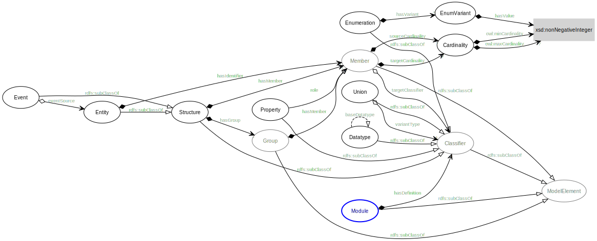
Figure 5: OWL Ontology
Figure 5 uses some notation elements from UML, although not a UML diagram itself. For a higher resolution version, click here.
{kind=link}
- Open triangular arrow heads correspond to the RDF Schema
subClassOfrelationship. - Filled diamonds correspond to composite associations, or strong ownership.
- Open diamonds correspond to aggregate associations, or weak ownership.
3.1. SDML Ontology
Listing 35 is the ontology header that describes the Ontology itself. This shows the use of annotation properties from the Dublin Core DCMI Terms and the W3C Simple Knowledge Organization System (SKOS). Section 3.7 presents details on commonly used annotation properties found in the Ontology.
@prefix dc: <http://purl.org/dc/elements/1.1/> . @prefix owl: <http://www.w3.org/2002/07/owl#> . @prefix rdf: <http://www.w3.org/1999/02/22-rdf-syntax-ns#> . @prefix skos: <http://www.w3.org/2004/02/skos/core#> . @base <https://sdml.io/sdml-owl.ttl#> . <https://sdml.io/sdml-owl.ttl#> rdf:type owl:Ontology ; skos:prefLabel "Simple Domain Modeling Language"@en ; skos:altLabel "SDML"@en ; dc:hasVersion "0.1.10" ; dc:creator "Simon Johnston <johntonskj@gmail.com>" ; dc:license <https://github.com/johnstonskj/tree-sitter-sdml/blob/main/LICENSE> ; rdf:seeAlso <https://sdml.io/> .
3.2. Datatypes
3.3. Classes
All classes have an RDF type of owl:Class.
| Name | Sub-Class Of | Disjoint With |
|---|---|---|
:ByReferenceMember |
:Member |
:IdentityMember, :ByValueMember |
:ByValueMember |
:Member |
:IdentityMember, :ByReferenceMember |
:Cardinality |
None. | |
:Classifier |
:ModelElement |
|
:Datatype |
:Classifier, rdfs:Datatype |
:Enumeration , :Structure , :Union , :Unknown |
:Entity |
:Structure |
:Event |
:EntityGroup |
:Group |
:StructureGroup |
:Enumeration |
:Classifier |
:Datatype, :Structure, :Union, :Unknown |
:Event |
:Structure |
:Entity |
:Group |
:ModelElement |
|
:IdentityMember |
:Member |
:ByValueMember, :ByReferenceMember |
:Member |
:ModelElement |
|
:ModelElement |
None. | |
:Module |
:ModelElement |
|
:Property |
:Classifier |
:Datatype, :Enumeration, :Structure, :Unknown |
:RefRole |
:Role |
|
:Role |
None. | |
:Structure |
:Classifier |
:Datatype, :Enumeration, :Union, :Unknown |
:StructureGroup |
:Group |
:EntityGroup |
:Union |
:Classifier |
:Datatype, :Enumeration, :Structure, :Unknown |
:Unknown |
:Classifier |
:Datatype, :Enumeration, :Structure, :Union |
:Variant |
None. |
3.4. Object Properties
All object properties have an RDF type of owl:ObjectProperty.
| Domain | Name | Range | Inverse Of |
|---|---|---|---|
:ByReferenceMember ∪ :RefRole |
:sourceCardinality |
:Cardinality |
|
:ByReferenceMember ∪ :Role |
:targetCardinality |
:Cardinality |
|
:Classifier |
:isDefinedBy |
:Module |
:hasDefinition |
:Classifier |
:isTypeVariantOf |
:Union |
:hasTypeVariant |
:Datatype |
:baseDatatype |
:Datatype ∪ rdfs:Datatype |
|
:Entity |
:entityHasGroup |
:EntityGroup |
|
:Entity |
:emitsEvent |
:Event |
:eventSource |
:Entity |
:hasIdentityMember 1,2 |
:IdentityMember |
|
:Entity ∪ :EntityGroup |
:hasByReferenceMember 2 |
:ByReferenceMember |
|
:Entity ∪ :EntityGroup ∪ :Event ∪ :Structure ∪ :StructureGroup |
:hasByValueMember 2 |
:ByValueMember |
|
:Enumeration |
:hasVariant |
:Variant |
:isVariantOf |
:Event |
:eventSource |
:Entity |
:emitsEvent |
:Member |
:targetClassifier |
:Classifier |
|
:Member |
:isMemberOf |
:Structure ∪ :EntityGroup ∪ :StructureGroup |
:hasMember |
:Member |
:targetClassifier |
:Classifier ∪ :Unknown |
|
:Module |
:hasDefinition |
:Classifier |
:isDefinedBy |
:Structure |
:structureHasGroup |
:StructureGroup |
|
:Structure ∪ :EntityGroup ∪ :StructureGroup |
:hasMember |
:Member |
:isMemberOf |
:Union |
:hasTypeVariant |
:Classifier |
:isTypeVariantOf |
:Variant |
:isVariantOf |
:Enumeration |
:hasVariant |
Notes:
- This also has the rdf type
owl:FunctionalProperty. - These are also sub-properties of
:hasMember.
3.5. Datatype Properties
All datatype properties have an RDF type of owl:DatatypeProperty.
| Name | Sub Property Of | Domain | Range |
|---|---|---|---|
:hasValue |
rdf:value |
:Variant |
xsd:nonNegativeInteger |
:maxOccurs |
:Cardinality |
xsd:nonNegativeInteger |
|
:minOccurs |
:Cardinality |
xsd:nonNegativeInteger |
3.6. Annotation Properties
All annotation properties have an RDF type of owl:AnnotationProperty.
| Name | Domain | Range |
|---|---|---|
:defaultVariant |
:Enumeration |
xsd:NMTOKEN |
:deprecatedSince |
N/A | :versionString |
:flatten |
:Member |
Boolean |
:hasVersionIdType |
:Entity |
:Datatype ∪ :Structure |
:hasVersioningStyle |
:Entity |
VersioningStyle |
:introducedIn |
N/A | :versionString |
:rootEntity |
:Module |
:Entity |
The properties :deprecatedSince and :introducedIn both refer to a range type :versionString, this type is a string that
conforms to the semver form of major.minor.path where each is an integer.
:versionString rdf:type rdfs:Datatype ; owl:onDatatype xsd:string ; owl:withRestrictions ( [ xsd:pattern "(0|[1-9][0-9]*)(\.0|[1-9][0-9]*){,2}" ] ) .
The property :hasVersioningStyle, if present, denotes an entity as versioned and what form of versioning is to be applies.
The values for this property are:
- Immutable
- The user does not get to control the versioning, every mutation of the entity results in a new version and that version is therefore immutable and so version identifiers are maximally stable.
- Snapshot
- The user creates a new version explicitly with a specific operation. This implies that there are mutations of a specific version possible and so the version identifier is not necessarily stable.
- Mutable
- In this case the user has complete control over the versioning by mutation of the entity. In general this implies that there is some member of the entity that holds the version identifier. This results in an explicitly unstable identifier.
:VersioningStyle rdf:type rdfs:DataRange ; owl:oneOf ( "Immutable"^^xsd:string "Snapshot"^^xsd:string "Mutable"^^xsd:string ) .
The corresponding property :hasVersionIdType references the type used to represent a specific version. The default for this
is xsd:string.
3.7. Commonly Used Annotations
The following are annotation properties that are common in defining and using Ontologies and other forms of controlled vocabularies. These are all well-defined as well as commonly understood and so should be used before others in annotating a model.
| Name | Usage | Domain | Range |
|---|---|---|---|
:defaultVariant |
Denotes, if present, the default variant of an enumeration. | :EnumVariant |
xsd:NMTOKEN |
:deprecatedSince |
The specific version in which this model element was marked as deprecated. | N/A | :versionString |
:introducedIn |
The specific version this model element first appeared. | N/A | :versionString |
dc:conformsTo |
An established standard to which the described model element conforms. | N/A | xsd:AnyURI |
dc:contributor |
An entity responsible for making contributions to the model element. | N/A | xsd:string |
dc:creator |
An entity primarily responsible for making the model element. | N/A | xsd:string |
dc:license |
A legal document giving official permission to do something with the model element. | :Module |
xsd:AnyURI |
rdfs:seeAlso |
Used to indicate a resource that might provide additional information about the model element. | N/A | xsd:AnyURI |
skos:altLabel |
An alternative lexical label/name for the model element. | N/A | rdf:langString |
skos:definition |
A complete explanation of the intended meaning of the model element. | N/A | rdf:langString |
skos:hiddenLabel |
A lexical label/name for the element where it may be searchable but not commonly displayed. | N/A | rdf:langString |
skos:historyNote |
Describes significant changes to the meaning or the form of the model element. | N/A | rdf:langString |
skos:prefLabel |
The preferred lexical label/name of the model element. | N/A | rdf:langString |
4. Walk-Through Example
The following section walks through the process of model creation and iterative elaboration to add detail as domain experts provide more information. In our example we will build a domain model for a vehicle rental company.
4.1. Starting with Core Entities
So, as you might imagine we can start the model with some pretty obvious entities, but with no detail beyond their names. Listing 36 is this first-pass domain model.
module rentals is entity Vehicle entity Location entity Customer entity Booking end
The sdml tool can be used to generate a concept diagram, a high-level view of only the entities in the model and their
relationships. The following command-line will generate figure 6 from listing
36.
sdml draw --diagram concepts \
--output-format svg \
--output-file docs/rentals-concept-1.svg \
docs/rental-1.sdm

Figure 6: Rentals Concepts (First Pass)
4.2. Adding Relationships
Figure 37 is the second-pass at our model, adding relationships from the Booking entity to the
Customer, Location, and Vehicle entities. Adding a body to the Booking entity, between is … end, requires the entity
specify an identifier. To allow the addition of bookingCode without spending time on the details of it's type the
keyword unknown is used to defer the type until later.
Additionally, the vehicle relationship specifies a new cardinality overriding the usual 0.. with 0..1.
module rentals is entity Vehicle entity Location entity Customer entity Booking is identity bookingCode -> unknown ref vehicle -> {0..1} Vehicle ref from -> Location ref customer -> Customer end end
Re-running the sdml tool on listing 37 will result in the relationships added, as shown in figure
7.

Figure 7: Rentals Basic Relationships
4.3. Adding our first Properties
In the next edit of our rentals model we see some additions:
- The use of
importto use theVehicleIdentificationNumberdata type from thecids(Common Identifiers) model. - The new entity
Classto model the rental class of a vehicle. Vehiclenow has an identifier, a relationship to the newClassentity, and a relationship toLocation.Bookingalso has a relationship to the newClassentity.- We demonstrate the non-range cardinality notation,
{1}, which is a shortcut for the range1..1.
module rentals is import cids:VehicleIdentificationNumber entity Class entity Vehicle is identity vin -> cids:VehicleIdentificationNumber ref rentalClass -> {1} Class ref onProperty -> {0..1} Location end entity Location entity Customer entity Booking is identity bookingCode -> unknown ref bookingClass -> {1} Class ref vehicle -> {0..1} Vehicle ref from -> Location ref customer -> {1} Customer end end
As usual we generate the concept diagram in figure 8 from listing 38.
4.4. More detail, and a new diagram

Figure 8: Rentals More Detail
module rentals is import [cids:VehicleIdentificationNumber cids:Uuid] import [xsd:date xsd:string] entity Class entity Vehicle is identity vin -> cids:VehicleIdentificationNumber ref rentalClass -> {1} Class end entity Location is identity id -> cids:Uuid address -> {1} Address end entity Customer is identity id -> cids:Uuid contactAddress -> {1} Address driverLicense -> {0..1} LicenseInformation end structure Address structure LicenseInformation is number -> xsd:string state -> xsd:string expiration -> xsd:date end entity Booking is identity bookingCode -> unknown ref bookingClass -> {1} Class ref vehicle -> {0..1} Vehicle ref pickup -> {1} Location pickupDate -> {1} xsd:date ref dropoff -> {1} Location dropoffDate -> {1} xsd:date ref customer -> {1} Customer end end
As usual we generate the concept diagram in figure 9 from listing 39.

Figure 9: Rentals Non-Entity Detail
sdml draw --diagram erd \
--output-format svg \
--output-file docs/rentals-concept-4.svg \
docs/rental-4.sdm

Figure 10: Rentals ERD Diagram
4.5. More detail, and yet another diagram
module rentals base <https://example.org/v/rentals> is import [ dc skos ] ;; This is actually a US VIN import cids:VehicleIdentificationNumber @dc:version = 2 datatype UniqueId <- xsd:string is @xsd:pattern = "[A-Za-z0-9_-]{22}" end union RentalClass of Compact UtilityVehicle Luxury end enum CustomerLevel of Basic = 1 Silver = 2 Gold = 3 end entity Vehicle is @skos:prefLabel = "Vehicle"@en identity vin -> VehicleIdentificationNumber information -> VehicleInformation ref rentalClass -> {1} Class end structure VehicleInformation is make -> xsd:string model -> xsd:string year -> xsd:integer is @xsd:minValue = 2000 @xsd:maxValue = 3000 end end entity Location entity Customer is identity id -> UniqueId end entity Booking is @sdml:versioningStyle = "Immutable" @sdml:versionIdType = VersionId identity bookingCode -> unknown ref customer -> {1} Customer group @skos:prefLabel = "Rental Period"@en pickup_date -> xsd:date ref pickup_location -> Location dropoff_date -> xsd:date ref dropoff_location -> Location end group @skos:prefLabel = "Requested"@en ref bookingClass -> {1} Class ref vehicle -> {0..1} Vehicle end end event VehicleAssigned source Booking is vehicle -> VehicleIdentificationNumber end end
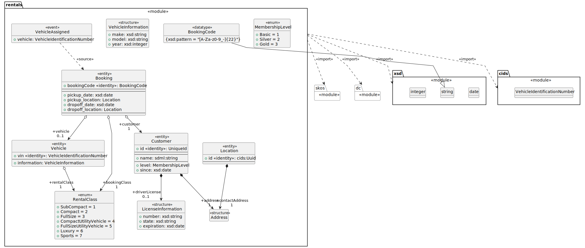
Figure 11: Rentals Structural Detail
5. Transformations
TBD
6. Implementation and Tools
Figure 3 gave a high-level overview of transformations, this section will expand not only on transforms but also the other capabilities of the tooling for SDML.
One element that is not included in figure 1, as it is primarily an implementation decision, is that the reference implementation for SDML is provided as a Tree-Sitter14 package. While generated tree-sitter parsers are not intended to be fast, or to be part of a compilation processes they do provide a multitude of language bindings, and a concrete syntax tree allowing easy development of the relatively simple tools required for SDML usage.
As such the much expanded figure 12 shows the

Figure 12: Implementation Overview
6.1. Core Library
6.2. Command-Line Tool
Install is simple using the cargo command. If you do not have cargo installed you can follow the standard rustup
directions15 or use the Homebrew16 or equivalent package manager.
cargo install sdml
Once installed the option --help or the command help will guide you through the commands available.
$ sdml --help Rust CLI for Simple Domain Modeling Language (SDML) Usage: sdml [OPTIONS] <COMMAND> Commands: highlight Highlight file tags Extract tags from file convert Convert model files into other formats draw Draw diagrams from models help Print this message or the help of the given subcommand(s) Options: -v, --verbose... More output per occurrence -q, --quiet... Less output per occurrence -h, --help Print help -V, --version Print version
For most commands the tool accepts a pair of arguments that determine the format and location of the generated output.
These commands --output-format / -f and --output-file / -o can be used in the following manner.
--output-format svg --output-file rentals.svg -output-file rentals.svg
In the second example above the format is not specified and so the tool will use the extension of the output file as the format specifier. If the output file is not specified the output is written to stdout. If neither argument is provided the output is written to stdout in the default format.
Similarly most tools use the module resolution rules for loading a module and so the input file is actually specified
as a module name. To allow for searches in non-standard locations the argument --base-path / -b can be used to
prepend a path to the standard search path. Thus the two examples below are identical as the current directory is always
a component of the search path.
--base-path . rentals rentals
6.2.1. Highlighting
$ sdlml highlight --help
Highlight an SDML source file
Usage: sdml highlight [OPTIONS] <MODULE>
Arguments:
<MODULE>
SDML module to convert
Options:
-f, --output-format <OUTPUT_FORMAT>
Format to convert into
[default: ansi]
Possible values:
- ansi: ANSI escape for console
- html: HTML pre-formatted element
- html-standalone: HTML stand-alone document
-v, --verbose...
More output per occurrence
-o, --output-file <OUTPUT_FILE>
File name to write to, if not provided will write to stdout
-q, --quiet...
Less output per occurrence
-b, --base-path <BASE_PATH>
The path to use as the IRI base for modules
-h, --help
Print help (see a summary with '-h')
-V, --version
Print version
For the console this uses ANSI escape sequences to format the text.
sdml highlight --output-format ansi rentals
To generate formatted and highlighted HTML the tool accepts two different format specifiers, html for simply a block
of HTML that can be inserted into another document, or html-standalone to generate a full document around the
highlighted code block.
sdml highlight --output-format html rentals sdml highlight --output-format html-standalone rentals
6.2.2. Draw Diagrams
To draw a high-level Concepts diagram, use the diagram specifier concepts. To generate an image file you need to install
Graphviz17.
sdml draw --diagram concepts \
--output-format svg --output-file rentals.svg \
--base-path . rentals
For more detail an Entity-Relationship diagram can be generated with the diagram specifier entity-relationship. To
generate an image file you need to install Graphviz17.
sdml draw --diagram entity-relationship \
--output-format svg --output-file rentals.svg \
--base-path . rentals
For the mose detail a UML Class diagram can be generated with the diagram specifier uml-class. The generated diagram
applies the profile outlined in appendix 10. To generate an image file you need to install
PlantUML18.
sdml draw --diagram uml-class \
--output-format svg --output-file rentals.svg \
--base-path . rentals
6.2.3. Module Resolution
A particular module rentals is resolved by looking for the module name first with the ".sdm" and then the ".sdml"
extension. If neither of these exist the same pair will be checked within a directory named rentals. So in total the
following four file paths are checked.
{prefix}rentals.sdm
{prefix}rentals.sdml
{prefix}rentals/rentals.sdm
{prefix}rentals/rentals.sdml
The purpose of the variable {prefix} is to allow the resolver to use an environment variable, SDML_PATH, to find and
load module files. Each path within the variable is used as a prefix in turn. The command line option base-path allows
you to prepend a value to the SDML_PATH list for just this command. In the following example:
SDML_PATH=lib/sdml sdml highlight --base-path ./examples rentals
The list of file paths to check are:
lib/sdml/rentals.sdm lib/sdml/rentals.sdml lib/sdml/rentals/rentals.sdm lib/sdml/rentals/rentals.sdml ./examples/rentals.sdm ./examples/rentals.sdml ./examples/rentals/rentals.sdm ./examples/rentals/rentals.sdml
This same resolution mechanism is used for all imported values, in the following example each module skos, other, and
more. With one exception, the module skos is known to the sdml command and it uses an internal representation.
module subDomain is import skos:prefLabel import other:Something import more end
6.3. Emacs Support
Emacs has been the primary playground for SDML and as such has some tools already built for editing and documentation.
The package sdml-mode (currently not in any package repository) is associated with any file ending in .sdm or .sdml with
highlighting and indentation support. Follow the installation instructions on the package site.
Emacs standard customization allows for managing all package variables and can be accessed via:
M-x customize-group RET sdml RET
6.3.1. Highlighting
Syntax highlighting is enabled by the tree-sitter-hl-mode minor mode based on the configuration in the constant
sdml-mode-tree-sitter-hl-patterns. The highlighting also carries over into Org Babel source blocks and into generated
content such as this documentation.
The sdml-mode also adds to the prettify-symbols-alist list, the set of symbols is in the custom variable
sdml-prettify-symbols-alist.
6.3.2. Indentation
Line indentation is enabled by the tree-sitter-indent-mode minor mode based on the configuration in the constant
sdml-mode-folding-definitions.
Default indentation is two spaces, although this can be overridden by the custom variable sdml-indent-offset.
6.3.3. Code Folding
Block Folding is provided by the ts-fold-mode minor mode based on the configuration in the constant
tree-sitter-indent-sdml-scopes. Note that folding of groups of line comments is also supported.
C-c C-s -– fold itemC-c C-s +– unfold itemC-c C-s C--– fold all items in bufferC-c C-s C-+– unfold all items in bufferC-c C-s /– unfold item and all childrenC-c C-s .– toggle fold/unfold state
As well as the mechanics of folding, the ts-fold package also has indicator support for windowed clients and this is
enabled by default with window-system is non-nil.
6.3.4. Debugging
The following two comands are provided by the underlying tree-sitter package, but exposed here with the common key
prefix.
C-c C-s d– open the tree-sitter debug viewC-c C-s q– open the tree-sitter query builder
6.3.5. Ispell
The additional package sdml-ispell provides selective spell checking by only checking selected nodes in the tree.
C-c C-s s– spell check the item at pointC-c C-s C-s– spell check all items in the buffer
By default only strings and comments will be checked, although this can be overridden by the custom variable
tree-sitter-ispell-sdml-text-mapping.
6.3.6. Flycheck
The additional package flycheck-sdml provides on-the-fly linting for SDML buffers. To enable, simply ensure Flycheck
mode is enabled for your buffer. Rather than per-buffer, you can enable this by setting flycheck-mode for all SDML files
with a hook.
The entire set of lint rules are stored in the custom variable sdml-lint-rules with the form:
'(rule-id "Issue message" level "tree-sitter query")
For example, the following rule returns the name of the module, but only if the first character is an upper case letter. This is marked as a warning by Flycheck and provided with the necessary message.
'(module-name-case "Module names may not start with upper-case" warning "((module name: (identifier) @name) (#match? @name \"^[:upper:]\"))")
6.3.7. Org-Babel
Org-Babel support provides the ability to call the SDML command-line tool to produce diagrams and more. For example, the following source block calls the CLI to draw a concept diagram for the enclosed module. It is worth noting that this documentation has been generated, including all source highlighting and diagrams, from an Org-mode document with Babel.
#+NAME: lst:rentals-example #+CAPTION: Rentals Concepts #+BEGIN_SRC sdml :cmdline draw --diagram concepts :file ./rentals-concepts.svg :exports both module rentals is entity Vehicle entity Location entity Customer entity Booking end #+END_SRC
The results block then references the resulting image.
#+NAME: fig:rentals-example-concepts #+CAPTION: Rentals Concepts #+RESULTS: lst:rentals-example [[file:./rentals-concepts.svg]]
But, what if we want to produce more than one diagram from the same source? By using the built-in noweb syntax we can create a new source block, but reference the original content. This source block has different command-line parameters and has it's own results block as well.
#+NAME: fig:rentals-example-erd #+BEGIN_SRC sdml :cmdline draw --diagram concepts :file ./rentals-erd.svg :exports results :noweb yes <<lst:rentals-example>> #+END_SRC
6.4. Neovim
Neovim has some great tree-sitter support with the nvim-tree-sitter and a nice in-editor playground. Firstly, add the tree-sitter plugin, but don't install yet, as shown on the nvim-treesitter page (using vim-plug):
call plug#begin() Plug 'nvim-treesitter/nvim-treesitter', {'do': ':TSUpdate'} call plug#end()
Now, add the following Lua block, using content from the homepage, and then set the ensure_installed to include the
query language and so highlight tree-sitter queries and set ignore_install to include sdml before installing the
tree-sitter plugin. The builtin sdml grammar will unfortunately install queries that will then be a problem so we want
to avoid that.
require'nvim-treesitter.configs'.setup { ensure_installed = { "query" }, sync_install = false, auto_install = true, highlight = { enable = true, disable = {}, additional_vim_regex_highlighting = false, }, incremental_selection = { enable = true, keymaps = { init_selection = "gnn", node_incremental = "grn", scope_incremental = "grc", node_decremental = "grm", }, }, indent = { enable = true }, query_linter = { enable = true, use_virtual_text = true, lint_events = {"BufWrite", "CursorHold"}, }, }
To allow tree-sitter to do folding based on folds.scm, add the following to init.vim.
set foldmethod=expr set foldexpr=nvim_treesitter#foldexpr()
Once the core plugin has been installed you can add the following Lua block in init.vim to install this grammar.
local parser_config = require "nvim-treesitter.parsers".get_parser_configs() parser_config.sdml = { install_info = { url = "https://github.com/johnstonskj/tree-sitter-sdml", files = {"src/parser.c"}, generate_requires_npm = true, requires_generate_from_grammar = true, }, filetype = "sdm", maintainers = { "@johnstonskj" }, }
Additionally, try the nvim-treesitter-context and nvim-treesitter-refactor plugins based on tree-sitter.
call plug#begin() Plug 'nvim-treesitter/nvim-treesitter', {'do': ':TSUpdate'} Plug 'nvim-treesitter/nvim-treesitter-context' Plug 'nvim-treesitter/playground' call plug#end()
Add the corresponding configuration:
require'nvim-treesitter.configs'.setup { // … playground = { enable = true, disable = {}, updatetime = 25, persist_queries = false, keybindings = { toggle_query_editor = 'o', toggle_hl_groups = 'i', toggle_injected_languages = 't', toggle_anonymous_nodes = 'a', toggle_language_display = 'I', focus_language = 'f', unfocus_language = 'F', update = 'R', goto_node = '<cr>', show_help = '?', }, } }
7. Appendix: Complete Surface Syntax Grammar
The grammar of the surface syntax is presented in Extended Backus–Naur form (EBNF)19. The addition of a character literal
range operation .. reduces the number of single character alternatives for clarity. There are also a set of pre-defined
terminals such as ASCII_DIGIT, ASCII_HEX_DIGIT, UC_LETTER_UPPER, and UC_LETTER_LOWER used to simplify character ranges.
Module = "module", Identifier, ModuleBase?, ModuleBody ModuleBase = "base", IriReference ModuleBody = "is", ImportStatement*, Annotation*, ( TypeDef | PropertyDef )*, "end" MemberImport = QualifiedIdentifier ModuleImport = Identifer Import = MemberImport | ModuleImport ImportStatement = "import", ( Import | "[", Import+, "]" ) Annotation = "@", IdentiferReference, "=", Value TypeDef = DataTypeDef | EntityDef | EnumDef | EventDef | StructureDef | UnionDef DataTypeDef = "datatype", Identifier, "<-", DataTypeBase, AnnotationOnlyBody? DataTypeBase = IdentifierReference | BuiltinSimpleType EntityDef = "entity", Identifier, EntityBody? EntityBody = "is", Annotation*, IdentityMember, ( MemberByValue | MemberByReference | EntityGroup )*, "end" EntityGroup = "group", Annotation*, ( MemberByValue | MemberByReference )* EnumDef = "enum", Identifier, EnumBody? EnumBody = "of", Annotation*, EnumVariant*, "end" EnumVariant = Identifier, "=", Unsigned, AnnotationOnlyBody? EventDef = "event", Identifier, "source", IdentifierReference, StructureBody? StructureDef = "structure", Identifier, StructureBody? StructureBody = "is", Annotation*, ( MemberByValue | StructureGroup )*, "end" StructureGroup = "group", Annotation*, MemberByValue*, "end" UnionDef = "union", Identifier, UnionBody? UnionBody = "of", Annotation*, TypeVariant*, "end" TypeVariant = IdentifierReference, TypeVariantRename?, AnnotationOnlyBody? TypeVariantRename = "as" Identifier PropertyDef = "property", Identifier, PropertyBody? PropertyBody = "is", Annotation*, PropertyRole, "end" PropertyRole = Identifier, ( "ref", Cardinality )?, TypeExpressionTo, AnnotationOnlyBody? PropertyMember = "as", Identifier IdentityMember = "identity", Identifier, ( PropertyMember | ( TypeExpressionTo, AnnotationOnlyBody? ) ) MemberByValue = Identifier, ( PropertyMember | ( TypeExpressionTo, AnnotationOnlyBody? ) ) MemberByReference = "ref", Identifier, ( PropertyMember | ( TypeExpressionFromTo, AnnotationOnlyBody? ) ) TypeExpression = "->" TypeReference TypeExpressionTo = "->" Cardinality?, TypeReference TypeExpressionFromto = Cardinality?, TypeExpressionTo TypeReference = UnknownType | IdentifierReference | BuiltinSimpleType UnknownType = "unknown" Cardinality = "{", Unsigned, CardinalityRange?, "}" CardinalityRange = "..", Unsigned? Value = SimpleValue | ValueConstructor | IdentifierReference | ListOfValues BuiltinSimpleType = "string" | "double" | "decimal" | "integer" | "boolean" | "iri" SimpleValue = String | Double | Decimal | Integer | Boolean | IriReference Boolean = "true" | "false" NumericSign = "+" | "-" Zero = "0" NonZero = "1".."9" Unsigned = Zero | NonZero, ( ASCII_DIGIT )* Integer = NumericSign?, Unsigned Decimal = Integer, ".", ( ASCII_DIGIT )+ ExponentChar = "e" | "E" Double = Decimal, ExponentChar, NumericSign?, Integer HexPair = ASCII_HEX_DIGIT, ASCII_HEX_DIGIT CharacterEscape = "\\", ( "\"" | "\\" | "\/" | "a" | "b" "e" | "f" | "n" | "r" | "t" | "v" ) UnicodeEscape = "\\u{", HexPair, ( HexPair ( HexPair )? )?, "}" NotAllowed = "\"" | "\\" | "\u{00}".."\u{08}" | "\u{0B}".."\u{1F}" | "\u{7F}" QuotedString = "\"", ( -NotAllowed | CharacterEscape | UnicodeEscape )*, "\"" LanguageTag = "@", ASCII_LETTER_LOWER, ASCII_LETTER_LOWER, ASCII_LETTER_LOWER? ( "-", ASCII_LETTER_UPPER, ASCII_LETTER_UPPER, ASCII_LETTER_UPPER )? ( "-", ASCII_LETTER_UPPER, ASCII_LETTER_LOWER, ASCII_LETTER_LOWER, ASCII_LETTER_LOWER )? ( "-", ( ( ASCII_LETTER_UPPER, ASCII_LETTER_UPPER ) | ( ASCII_DIGIT, ASCII_DIGIT, ASCII_DIGIT ) ) ) String = QuotedString, LanguageTag? IriReference = "<", ( - ("<" | ">" | "\"" | "{" | "}" | "|" | "^" | "`" | "\\" | "\u{00}".."\u{20}") | UnicodeEscape )*, ">" ValueConstructor = IdentifierReference, "(", SimpleValue, ")" ListOfValues = "[", ( SimpleValue | ValueConstructor | IdentifierReference )+, "]" IdentifierInitial = UC_LETTER_UPPER | UC_LETTER_LOWER IdentifierChar = IdentifierInitial | UC_NUMBER_DECIMAL Identifier = IdentifierInitial, IdentifierChar*, ( "_", IdentifierChar+ )* QualifiedIdentifier = Identifier, ":", Identifier IdentifierReference = QualifiedIdentifier | Identifier LineComment = ";", ( -( "\r" | "\n" ) )* Whitespace = "\f" | "\n" | "\r" | "\t" | "\v" | "\u{0020}" | "\u{00a0}" | "\u{1680}" | "\u{2000}".."\u{200a}" | "\u{2028}" | "\u{2029}" | "\u{202f}" | "\u{205f}" | "\u{3000}" | "\u{feff}"
8. Appendix: Standard Library
The following are standard modules that are included with the command-line tool.
| Name | Corresponding URI | Comment |
|---|---|---|
dc |
http://purl.org/dc/elements/1.1/ | Complete |
dcam |
http://purl.org/dc/dcam/ | Complete |
dcmi_type |
http://purl.org/dc/dcmitype/ | Complete |
dcterms |
http://purl.org/dc/terms/ | Complete |
owl |
http://www.w3.org/2002/07/owl# | In Progress |
rdf |
http://www.w3.org/1999/02/22-rdf-syntax-ns# | Complete |
rdfs |
http://www.w3.org/2000/01/rdf-schema# | Complete |
sdml |
https://sdml.io/sdml-owl.ttl# | In Progress |
sdml_types |
https://sdml.io/sdml-types.ttl# | Complete |
skos |
http://www.w3.org/2004/02/skos/core# | Complete |
xml |
http://www.w3.org/XML/1998/namespace | In Progress |
xsd |
http://www.w3.org/2001/XMLSchema# | In Progress |
9. Appendix: Surface Syntax to RDF
TBD
9.1. Whitespace
Whitespace present in the surface syntax has no effect on the corresponding RDF.
9.2. Comments
Comments present in the surface syntax are not translated into the corresponding RDF.
9.3. Identifiers
Identifiers for modules and type definitions are appended to the base IRI of the module resource, making individual types within a module directly addressable.
Example:
Given a module resource retrieved from https://example.com/v/example/ and containing the following:
module example is end
The module within has the IRI identifier https://example.com/v/example/example. However, if the module overrides the
retrieved location using the base specifier, as follows:
module example base <https://example.org/langs/Example#> is end
The module named example within this resource now has the absolute IRI identifier https://example.org/langs/Example#example.
9.4. Values
Value Literals are necessary for the specification of annotation values. Literals fall into two categories, simple values and lists with an additional non-literal form the value constructor.
9.4.1. Simple Value Literals
| SDML Type | Underlying Type | Value Space | Lexical Space |
|---|---|---|---|
boolean |
xsd:boolean |
The values true and false. |
true and false |
decimal |
xsd:decimal |
A 128-bit representation of a fixed-precision decimal number. | XML Schema |
double |
xsd:double |
An IEEE double-precision 64-bit floating point type. | XML Schema |
integer |
xsd:integer |
A signed 64-bit integer. | |
iri |
xsd:AnyURI |
Represents a Uniform Resource Identifier Reference (URI). | XML Schema |
string |
rdf:langString |
A string value with optional language-tag. | RDF |
9.4.2. List Literals
Example:
Given the following list literal:
module example is import skos @skos:altLabel = [ "yes" "no" "maybe" ] end
The generated RDF consists of separate statements for each value in the list.
:thing skos:altLabel "yes" . :thing skos:altLabel "no" . :thing skos:altLabel "maybe" .
For clarity and brevity this is usually written in Turtle as an object list20:
:thing skos:altLabel "yes", "no", "maybe" .
Currently there is no mapping from the surface syntax to list values, that is an RDF Collection21
which constructs a list using the rdf:first and rdf:rest predicates. This would result in the following RDF:
:thing skos:altLabel ( "yes" "no" "maybe" ) .
9.4.3. Value Constructors
A value constructor allows for the precise specification of a datatype for a literal.
module example is import sdml @sdml:defaultVariant = xsd:nonNegativeInteger(0) end
:example sdml:defaultVariant "0"^^xsd:nonNegativeInteger .
9.5. Modules
Example with Implied Base:
module example is end
@prefix sdml: <https://api.amazonadvertising.com/domain-model> . @prefix owl: <http://www.w3.org/2002/07/owl#> . :example rdf:type sdml:Module, owl:NamedIndividual .
Example with Explicit Base:
module example base <https://example.org/langs/Example#> is end
@base <https://example.org/langs/Example#> . @prefix : <https://example.org/langs/Example#> . @prefix sdml: <https://api.amazonadvertising.com/domain-model> . @prefix owl: <http://www.w3.org/2002/07/owl#> . @prefix xml: <http://www.w3.org/XML/1998/namespace> . :example rdf:type sdml:Module, owl:NamedIndividual .
9.6. Imports
Example:
module example is import xml end
@base <https://example.org/langs/Example#> . @prefix : <https://example.org/langs/Example#> . @prefix sdml: <https://api.amazonadvertising.com/domain-model> . @prefix owl: <http://www.w3.org/2002/07/owl#> . @prefix xml: <http://www.w3.org/XML/1998/namespace> . :example rdf:type sdml:Module, owl:NamedIndividual .
9.7. Annotations
9.8. Data Type Definition
Example:
module example is datatype name <- xsd:string end
:name rdf:type rdfs:Datatype, owl:NamedIndividual ; rdfs:isDefinedBy :example ; owl:onDatatype xsd:string .
Example with Restrictions:
module example is datatype name <- xsd:string is @xsd:minLength = 5 @xsd:maxLength = 25 end end
:name rdf:type rdfs:Datatype, owl:NamedIndividual ; rdfs:isDefinedBy :example ; owl:onDatatype xsd:string ; owl:withRestrictions ( [ xsd:minLength "5"^^xsd:nonNegativeInteger ] [ xsd:maxLength "25"^^xsd:nonNegativeInteger ] ) .
9.9. Property Definition
TBD
9.10. Entity Definition
Example Empty Entity:
module example is entity Person end
:Person rdf:type sdml:Entity, owl:NamedIndividual ; rdfs:isDefinedBy :example .
Example Entity with Identity:
module example is entity Person is identity id -> PersonId end end
:Person rdf:type sdml:Entity, owl:NamedIndividual ; rdfs:isDefinedBy :example ; :hasIdentifyingMember [ rdfs:label "id" ; :targetClassifier :Person ; ] .
:Person_id rdf:type sdml:Member ; rdfs:label "id" ; :targetClassifier :Person . :Person rdf:type sdml:Entity, owl:NamedIndividual ; rdfs:isDefinedBy :example ; :hasIdentifyingMember :Person_id .
Example Entity with By-Value Member:
TBD
Example Entity with By-Reference Member:
module example is entity Person is identity id -> PersonId ref contact {0..} -> {0..2} Person is @dc:description = "Emergency contact person" end end end
:Person rdf:type sdml:Entity, owl:NamedIndividual ; rdfs:isDefinedBy :example ; :hasReferenceMember [ rdfs:label "contact" ; :targetClassifier :Person ; :sourceCardinality [ owl:minCardinality 0 ; ] ; :targetCardinality [ owl:minCardinality 0 ; owl:maxCardinality 2 ; ] ; dc::description "Emergency contact person" ] .
Example Entity with Group:
TBD
module example is entity Person is identity id -> PersonId group @skos:prefLabel = "Identification" pref_name -> xsd:string alt_name -> xsd:string end end end
9.11. Enumeration Definition
Example Empty Enumeration:
module example is enum DistanceUnit end
:DistanceUnit rdf:type sdml:Enumeration, owl:NamedIndividual ; rdfs:isDefinedBy :example .
Example Enumeration with Variants:
module example is enum DistanceUnit is Meter = 1 Foot = 2 end end
:DistanceUnit rdf:type sdml:Enumeration, owl:NamedIndividual ; rdfs:isDefinedBy :example ; :hasValueVariant [ rdf:type sdml:EnumerationVariant ; rdfs:label "Meter" ; rdf:value 1 ] , [ rdf:type sdml:EnumerationVariant ; rdfs:label "Foot" ; rdf:value 2 ] .
Example Enumeration with Named Variants:
Alternatively if the enumeration sets the SDML property variantTransform to the value "named" it will alter the
transformation (from the default "anonymous") to RDF such that all variants become named individuals within the
enclosing module.
module example is import sdml enum DistanceUnit is @sdml:variantTransform = "named" Meter = 1 Foot = 2 end end
:Meter rdf:type sdml:EnumerationVariant, owl:NamedIndividual ; rdfs:label "Meter" ; rdf:value 1 . :Foot rdf:type sdml:EnumerationVariant, owl:NamedIndividual ; rdfs:label "Foot" ; rdf:value 2 . :DistanceUnit rdf:type sdml:Enumeration, owl:NamedIndividual ; rdfs:isDefinedBy :example ; :hasValueVariant :Meter ; :hasValueVariant :Foot.
9.12. Event Definition
Example Empty Event:
module example is event PersonNameChanged source Person end
:PersonNameChanged rdf:type sdml:Event, owl:NamedIndividual ; rdfs:isDefinedBy :example ; sdml:eventSource :Person .
Example Event with Members:
module example is event PersonNameChanged source Person is ;; identifier members will be copied from Person fromValue -> Name toValue -> Name end end
:PersonNameChanged rdf:type sdml:Event, owl:NamedIndividual ; rdfs:isDefinedBy :example ; sdml:eventSource :Person ; :hasMember [ rdfs:Label "personId" ; :targetClassifier :Person ] , [ rdfs:Label "fromValue" ; :targetClassifier :Name ] , [ rdfs:Label "toValue" ; :targetClassifier :Name ] .
9.13. Structure Definition
Example Empty Structure:
module example is structure Length end
:Length rdf:type sdml:Structure, owl:NamedIndividual ; rdfs:isDefinedBy :example .
Example Structure with Annotation:
module example is structure Length is @skos:prefLabel = "Length"@en end end
:Length rdf:type sdml:Structure, owl:NamedIndividual ; rdfs:isDefinedBy :example ; skos:prefLabel "Length"@en .
Example Structure with Members:
module example is structure Length is @skos:prefLabel = "Length"@en value -> Decimal unit -> DistanceUnit end end
:Length rdf:type sdml:Structure, owl:NamedIndividual ; rdfs:isDefinedBy :example ; skos:prefLabel "Length"@en . :hasMember [ rdfs:label "value" ; :targetClassifier :Decimal ; ] , [ rdfs:label "unit" ; :targetClassifier :DistanceUnit ; ] .
Example Structure with Groups:
module example is structure Account is @skos:prefLabel = "Customer Account"@en group @skos:prefLabel = "Metadata"@en created -> xsd:dateTime end group @skos:prefLabel = "Customer Information"@en ref customer -> {1..1} Customer end end end
9.14. Union Definition
Example Empty Union:
module example is union Vehicle end
:Vehicle rdf:type sdml:Union, owl:NamedIndividual ; rdfs:isDefinedBy :example .
Example Union with Types:
module example is union Vehicle of Car Truck Boat end end
:Vehicle rdf:type sdml:Union, owl:NamedIndividual ; rdfs:isDefinedBy :example . sdml:hasTypeVariant :Car ; sdml:hasTypeVariant :Truck ; sdml:hasTypeVariant :Boat .
Example Union with Annotation:
module example is union Vehicle of @skos:prefLabel = "Vehicle"@en Car Truck Boat end end
:Vehicle rdf:type sdml:Union, owl:NamedIndividual ; rdfs:isDefinedBy :example . skos:prefLabel "Vehicle"@en . sdml:hasTypeVariant :Car ; sdml:hasTypeVariant :Truck ; sdml:hasTypeVariant :Boat .
Example Union with Rename:
module example is union Vehicle of Car Truck Boat as WaterCar end end
:Vehicle rdf:type sdml:Union, owl:NamedIndividual ; rdfs:isDefinedBy :example . sdml:hasTypeVariant :Car ; sdml:hasTypeVariant :Truck ; sdml:hasTypeVariant [ skos:prefLabel "WaterCar" ; owl:equivalentClass :Boat ] .
10. Appendix: UML Profile for SDML
This section is non-normative.
Based upon the Unified Modeling Language 2.5.1.
10.1. The Profile
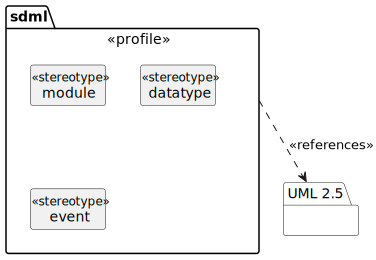
Figure 13: Profile Package
Example:
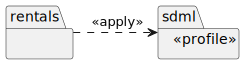
Figure 14: Applying the Profile
10.2. Modules
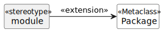
Figure 15: Module Stereotype
Example:
module rentals is end
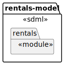
Figure 16: A Module Example
10.3. Datatypes
The profile element «datatype» is a specialization of the UML PrimitiveType (10.2.3.2) classifier.
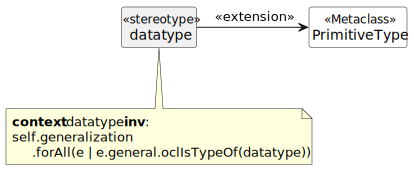
Figure 17: Datatype Stereotype
Example:
module rentals is datatype VehicleIdNumber <- string end
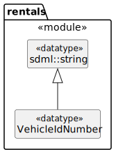
Figure 18: A Datatype Example
10.4. Entities
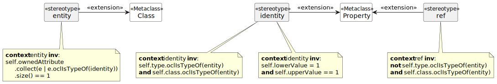
Figure 19: Entity Stereotype
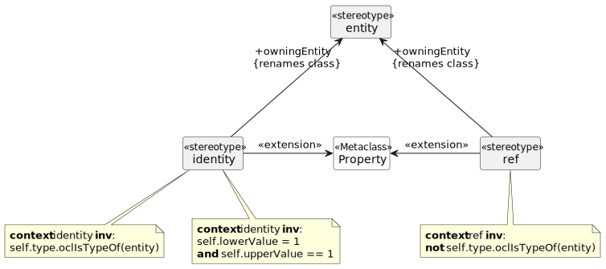
Figure 20: Entity Member Stereotypes
For details on by-value members and groups see section 10.7 below.
Example:
module rentals is import uuid datatype VehicleIdNumber <- string entity Vehicle is identity vin -> VehicleIdNumber end entity Booking is identity id -> uuid::Uuid ref vehicle {0..1} -> {0..1} Vehicle end end
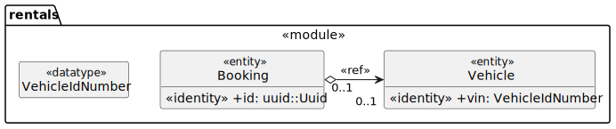
Figure 21: An Entity Example
10.5. Events
The standard Signal (10.3.3.1) and Dependency
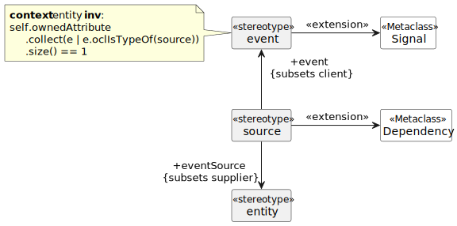
Figure 22: Event Stereotype
For details on by-value members and groups see section 10.7 below.
Example:
module rentals is import uuid entity Booking is identity id -> uuid::Uuid end event VehicleAssigned source Booking end
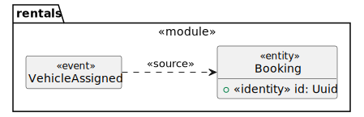
Figure 23: Example Event
10.6. Enumerations
The standard Enumeration classifier is used to model enum definitions.
The standard EnumerationLiteral instance is used to model value variants.
Example:
TBD
10.8. Unions
Generalization Sets (9.7)
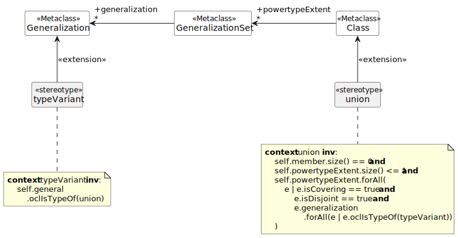
Figure 24: Union and typeVariant Stereotypes
Example:
module rentals is import uuid structure Car structure Van structure Truck union RentalClass of Car Van Truck end end
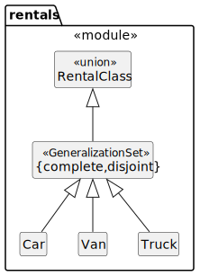
Figure 25: Example Union
10.9. Properties
TBD
11. Appendix: License
Copyright 2023 Simon Johnston <johnstonskj@gmail.com>
Licensed under the Apache License, Version 2.0 (the "License");
you may not use this file except in compliance with the License.
You may obtain a copy of the License at
http://www.apache.org/licenses/LICENSE-2.0
Unless required by applicable law or agreed to in writing, software
distributed under the License is distributed on an "AS IS" BASIS,
WITHOUT WARRANTIES OR CONDITIONS OF ANY KIND, either express or implied.
See the License for the specific language governing permissions and
limitations under the License.
12. Appendix: Tables of Other Content
List of Tables
- Table 1: String Escape Characters
- Table 2: OWL Built-in Datatype Facets
- Table 3: Built-in Simple Type Mapping
- Table 4: Summary of Member Formats
- Table 5: OWL: Classes
- Table 6: OWL: Object Properties
- Table 7: OWL: Datatype Properties
- Table 8: OWL: Annotation Properties
- Table 9: Commonly Used Annotation Properties
- Table 10: Standards Library Modules
- Table 11: Summary of Value Literals
List of Listings
- Listing 1: Comments
- Listing 2: Comment Conventions
- Listing 3: Empty Module
- Listing 4: Empty Module with Base
- Listing 5: Importing Module
- Listing 6: Importing Member
- Listing 7: Importing a List
- Listing 8: Value Constructor Example
- Listing 9: Value List Example
- Listing 10: New Datatype
- Listing 11: New Datatype with Restrictions
- Listing 12: Annotation Property
- Listing 13: Annotation Property List
- Listing 14: Annotated Module
- Listing 15: The definition of rdfs:comment
- Listing 16: The SDML definition of rdfs:comment
- Listing 17: Empty Property
- Listing 18: Property with Roles
- Listing 19: Members in a Structure
- Listing 20: Empty Structure
- Listing 21: Annotated Structure
- Listing 22: Structure Members
- Listing 23: Structure Members and Groups
- Listing 24: Empty Entity
- Listing 25: Entity with Identifying Member
- Listing 26: Entity with Reference Member
- Listing 27: Empty Event
- Listing 28: Event
- Listing 29: Empty Enum
- Listing 30: Enum With Variants
- Listing 31: Empty Union
- Listing 32: Union With Variants
- Listing 33: Union Type Definition
- Listing 34: Union Type As Property
- Listing 35: OWL: Ontology Header
- Listing 36: Rentals Concepts (First Pass)
- Listing 37: Rentals Basic Relationships
- Listing 38: Rentals More Detail
- Listing 39: Rentals Non-Entity Detail
- Listing 40: Rentals Structural Detail
Footnotes:
Home at sdmi.io, source at github.com
Domain-Driven Design, Wikipedia
Model-Driven Development, Wikipedia
Thrift interface description language, Apache Software Foundation
>#+LANGUAGE: en
Unicode General Category, Unicode.org
SPARQL 1.1 Overview, W3C
RDF 1.1 Turtle – Terse RDF Triple Language, §6.3 IRI References, W3C
DublinCoreDCMI Metadata Terms, DublinCore
Vehicle identification number, Wikipedia
Home at Tree Sitter, source at github.com
Installing Cargo from the Cargo book
Extended Backus-Naur Form (EBNF), Wikipedia
RDF 1.1 Turtle – Terse RDF Triple Language, §2.3 Object Lists, W3C
RDF 1.1 Turtle – Terse RDF Triple Language, §2.8 Collections, W3C